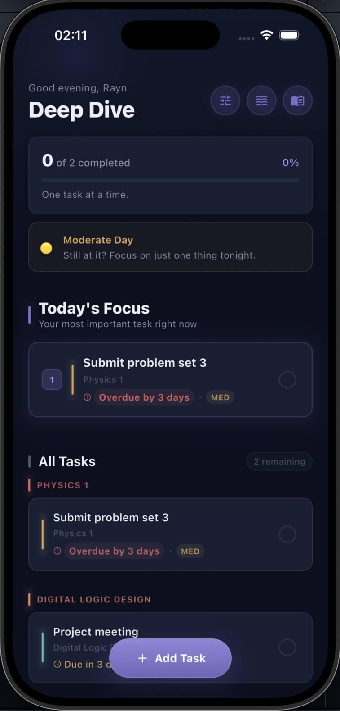
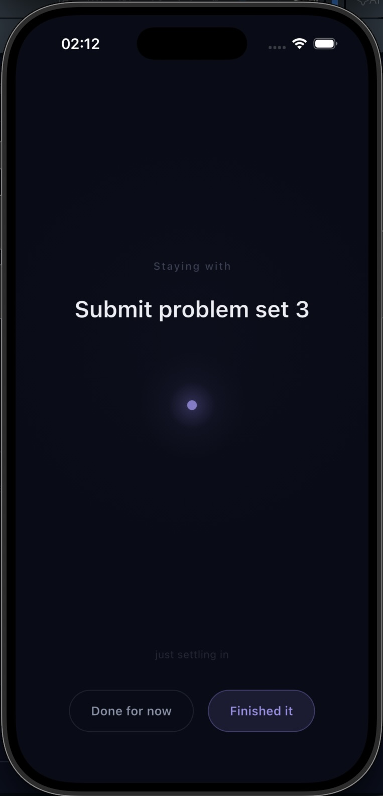
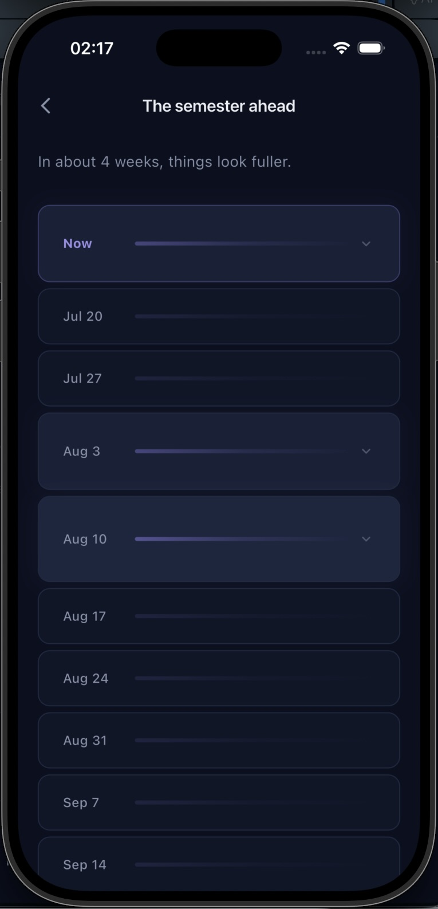
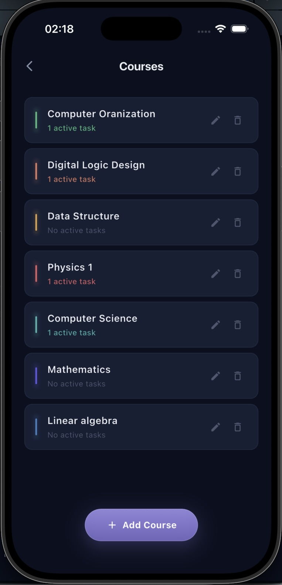

Deep Dive
A calmer space for your studies.
It helps you carry less, not do more. See only what matters today, and let the rest of the semester wait its turn.
Placeholder — links go live at launch
Today's Focus
Shows only what truly needs you right now. In heavy weeks, it narrows — never crowds.
Focus Session
A quiet, full-screen space for one task. No timers-as-pressure, no scoring, no streaks.
Semester Timeline
A gentle, atmospheric view of the weeks ahead. Grounding, never alarming.
Quiet by design
No gamification, no productivity scoring. Works fully offline. Your tasks stay on your device.
Optional continuity
Sign in to preserve your space across devices, if you'd like to. Never required, never sold, never tracked.
See it in your hands
A few moments from the app.



